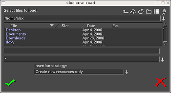

| [ << ] | [ >> ] | [Top] | [Contents] | [Índice] | [ ? ] |
Aqui está a maioria dos formatos de arquivo suportados e notas sobre sua compressão. Você pode ser capaz de conseguir carregar outros formatos não descritos aqui.
O formato do arquivo afeta o que o Cinelerra faz com ele. Editar as Listas de Decisão de Edição (EDL) substitui as configurações do projeto. Formatos que contêm mídia mas não edições de decisões apenas adicionam informações às trilhas. Se a taxa de amostragem de seu projeto é 48 kHz e você carregar um arquivo de áudio a 96khz, você ainda o estará reproduzindo a 48 kHz. Se você carregar um arquivo EDL a 96khz e a taxa de amostragem do projeto atual for de 48 kHz, você o mudará para 96 kHz.
Alguns formatos de arquivo são exibidos muito lentamente na Linha do Tempo. Normalmente, eles possuem vídeos que estão altamente comprimidos. Desenhar nos vídeos altamente comprimidos pode ser muito lento - desabilite o desenho ("picon drawing") para estes arquivos com a opção Desenhar mídia para aumentar a velocidade das operações.
Atributos de trilha
Atualmente, são suportados os seguintes formatos:
Quicktime não é o padrão para UNIX, mas nós o usamos porque ele é bem documentado. Todos os vídeos Quicktime na internet são comprimidos. O Cinelerra não suporta a maioria dos vídeos Quicktime comprimidos, mas suporta alguns. Se o programa der pau quando tentar carregar um vídeo Quicktime, isso significa que o formato provavelmente não era suportado.
O Quicktime é um contâiner para 2 codecs, um codec de vídeo e um codec de áudio. Os codecs de vídeo e áudio são pegos separadamente. A codificação preferível de saída para Quicktime é vídeo em MPEG-4 e áudio em MPEG-4. Este formato toca nos reprodutores comerciais do Windows e possui uma boa qualidade de compressão. Para uma melhor compressão, use vídeo em H-264. Infelizmente, a decodificação do H-264 é tão lenta que ele não consegue reproduzir tamanhos de quadros muito grandes.
O Cinelerra suporta 2 codecs não-padrão: vídeo em Dual MPEG-4 e vídeo em Dual H.264. Eles não tocarão em nada além do Cinelerra e do XMovie. Eles são desenhados para vídeos nos quais os quadros foram divididos em 2 campos ("fields"), cada campo sendo exibido sequencialmente. Os codecs Dual sobrepõem ("interleave") as duas faixas de vídeo para melhorar a eficiência sem requerer mudanças maiores no reprodutor ("player").
É o mesmo que o Quicktime com MPEG-4 como codec de áudio.
Renderizar uma seqüência de imagens não é o mesmo que renderizar uma única imagem. Quando se renderiza uma seqüência de imagens, o Cinelerra gera um arquivo de tabela de conteúdos ("TOC") para a seqüência de imagens e faz uma imagem diferente para cada posição da Linha do Tempo. A tabela de conteúdos pode ser carregada ao invés das imagens individuais para obter uma performance melhor. Para aprender mais sobre os diferentes formatos de imagens suportados em uma seqüência de imagens, leia sobre imagens estáticas (a seguir).
Para evitar importar no Cinelerra uma seqüência de imagens como uma série de quadros únicos e para configurar manualmente sua duração na linha do tempo, (o que seria muito lento e consumiria muitos recursos do sistema), você pode usar um "arquivo de lista". Um "arquivo de lista" é um arquivo de texto com um formato específico contendo caminhos absolutos para todos os quadros da seqüência mais informações adicionais como resolução da imagem, formato de arquivo e taxa de quadros da seqüência. Esta lista pode ser escrita manualmente (não muito agradável, especialmente quando se lida com longos caminhos de arquivo e muitos quadros) ou com a ajuda do IMG2LIST 0.1.5., um pequeno aplicativo escrito por Claudio "malefico" ANDAUR. Este script gera uma lista a partir de um quadro de uma seqüência de imagens e auto-detecta todos os parâmetros dela, incluindo o número de quadros, formato de arquivo e resolução de imagem. Para saber mais sobre este Gerador de Listas do Cinelerra e para baixá-lo, veja http://argoslabs.com/~malefico/software/img2list.html.
Renderizar uma única imagem faz com que o arquivo de imagem seja sobrescrito para cada posição da Linha do Tempo. Nenhuma tabela de conteúdos é criada. Quando carregada na linha do tempo, a imagem ocupa a duração de um quadro ("frame"). Aproxime a Linha do Tempo para vê-la. Para extender sua duração, arraste suas bordas como você faria com recortes de vídeo. Você pode arrastar as bordas de uma imagem estática tanto quanto quiser. Imagens no Cinelerra possuem duração infinita.
O Cinelerra permite que você defina a duração inicial dos recortes carregados. O parâmetro para isto está na seção Imagens da janela Configurações->Preferências->Janela de gravação.
A menos que seu material original venha de uma fonte digital (como uma câmera de fotografia digital), a primeira coisa que você deve fazer antes de usá-la é de alguma forma capturar os blocos ("assets") em um meio digital utilizável.
Para fotos antigas, mapas em papel, desenhos ou diagramas, você pode querer usar um scanner para lê-los e transformá-los em arquivos PNG, TIF, TGA ou JPG. Você pode querer usar o programa Gimp para pós-processar as imagens, limpar áreas danificadas ou corrigir sua coloração.
Se suas imagens vêm de uma fonte digital como uma câmera digital ou uma captura de tela, assegure-se de capturar o material usando a melhor resolução possível. Isso te ajudará quando estiver trabalhando com o material dentro do Cinelerra.
Importante: Imagens importadas sempre ficam em seu tamanho original. Assim, você deve levar em consideração a razão de aspecto de seu vídeo no Cinelerra e eventualmente redimensionar suas imagens antes de importá-las no Cinelerra.
Por exemplo, a razão de aspecto de imagens PAL é 4:3, mas 720x576 é 5/4. Para que suas imagens importadas sejam exibidas corretamente, você precisa redimensionar o tamanho horizontal:
Novo tamanho horizontal=(5 / 4) / (4 / 3) x Tamanho horizontal original
Para vídeos PAL, você tem que multiplicar o tamanho horizontal das imagens que você quer importar por um fator de 0.9375.
Aqui está um pequeno script shell que, quando rodado a partir de uma pasta contendo imagens jpg, redimensiona essas imagens e as coloca em uma nova pasta chamada `redimensionadas':
#/bin/sh
mkdir redimensionadas
for element in `ls . | grep jpg`;
do
size=`identify ${element}`
width=`echo ${tamanho} | sed '+s+.*JPEG ++' | sed '+s+x.*++'`
height=`echo ${tamanho} | sed '+s+.*JPEG [0-9]*x++' | sed '+s+DirectClass.*++'`
let new_width=${largura}*9375/10000
convert -resize "${nova_largura}x${altura}!" -quality 100 ${element} resized/${element}
done
Você pode não conhecer o Open EXR. Este formato armazena imagens de pontos flutuantes RGB ("floating point RGB images"). Ele também suporta um pequeno grau de compressão. Projetos que renderizam para EXR devem estar em um modelo de cor de ponto flutuante para obter vantagem dele See section Atributos do projeto. Várias opções de compressão estão disponíveis para EXR.
Selecione Usar alfa se o modelo de cor do projeto possui um canal alfa e você quer mantê-lo no arquivo. De outro modo, as cores primárias serão multiplicadas pelo canal alfa.
Imagens brutas ("RAW") de câmeras digitais são um tipo especial de arquivo de imagem que o Cinelerra apenas importa. Elas devem ser processadas em um espaço de cor de ponto flutuante uma vez que estejam na Linha do Tempo. Imagens brutas de câmeras Canon são as únicas que foram testadas. Elas precisam que lhes seja aplicado o efeito Gama para corrigir o gama. Uma vez que imagens brutas levam um bom tempo para interpolar, elas normalmente são vistas primeiro em um arquivo proxy e depois tocadas.
Primeiro aplique o efeito Gama em uma trilha de imagens brutas e configure-o para Automático com gama em 0.6. Depois, renderize a Linha do Tempo para um arquivo Quicktime JPEG. Apenda ("Append") o arquivo Quicktime JPEG em uma nova trilha e desabilite a reprodução ("playback") da trilha antiga. Agora, a cópia de cada imagem bruta com o gama corrigido pode ser pré-visualizada relativamente rápido na mesma posição da Linha do Tempo da imagem original.
AVI com codecs de áudio e vídeo variados. Uma vez que o AVI é tão fragmentado, sua sorte vai variar.
Arquivos MPEG contendo vídeo podem ser carregados diretamente no Cinelerra. Se o arquivo for suportado, uma tabela de conteúdos (TOC) será construída. Se o arquivo não for suportado, o programa normalmente dá pau ou mostra trilhas muito pequenas. Infelizmente, este método de carregar arquivos MPEG não é bom o suficiente se você pretende usar uma fazenda de renderização ("renderfarm").
Para usar arquivos MPEG em uma fazenda de renderização, você precisa rodar o mpeg3toc para gerar uma tabela de conteúdos (TOC) para o arquivo e então carregar a tabela de conteúdos. O mpeg3toc requere o caminho completo do arquivo MPEG. Se você não usar o caminho completo, ele assume que o arquivo MPEG está no mesmo diretório de onde o Cinelerra está sendo rodado.
Faixas de MPEG são estruturadas em várias trilhas. Cada trilha pode ser vídeo ou áudio. Cada trilha de áudio pode ter de 1-6 canais. O Cinelerra converte cada canal de áudio em uma trilha.
Notas sobre codificação de vídeo em mpeg:
A codificação de vídeo MPEG é feita separadamente da codificação de áudio MPEG. Em vídeos MPEG, há 2 modelos de cor. O modelo YUV 4:2:0 é codificado por uma versão altamente otimizada do mpeg2enc com pré-configurações para eletrônicos padrão de cosumidores. No processo de otimizar o mpeg2enc, eles se livraram da codificação YUV 4:2:2. O modelo de cor YUV 4:2:2 é codificado por uma versão menos otimizada do mpeg2enc.
A codificação YUV 4:2:2 foi mantida porque a versão NTSC do vídeo DV perde muita qualidade quando transferida para YUV 4:2:0. Este vídeo DV deve ser transferido para YUV 4:2:2.
Quando codificando para YUV 4:2:0, o parâmetro de taxa de bits possui um significado diferente dependendo de se a taxa de bits ou a quantização é mantida fixa. Se a taxa de bits for mantida fixa, significa a taxa de bits-alvo. Se a quantização e mantida fixa, significa o máximo permitido como taxa de bits. Esta é uma coisa estranha da versão do mpeg2enc.
O DVD é dividido em um número de programas, cada um identificado por um arquivo `IFO' singular. Se você quiser carregar um DVD, ache o arquivo `IFO' correspondente para o programa de interesse. Carregue o arquivo IFO diretamente e uma tabela de conteúdos (TOC) será construída. Alternativamente, para o uso de fazenda de renderização ("renderfarm"), a tabela de conteúdos pode ser criada separadamente.
Rode: mpeg3toc -v /cdrom/video_ts/vts_01_0.ifo dvd.toc
ou algo similar. Então carregue o `dvd.toc'.
Estes são arquivos .mp2 e .mp3. Se possuírem taxa de bits fixa, eles podem ser carregados diretamente sem nenhuma tabela de conteúdos (TOC). Faixas com taxas de bits variáveis precisam ter uma tabela de conteúdos criada com o mpeg3toc.
O formato OGG é uma forma antiquada mas supostamente não patenteada de comprimir áudio e vídeo. A qualidade não é tão boa quanto o H.264 ou o áudio MPEG-4. Na realidade, qualquer pessoa com dinheiro e desejo suficiente pode achar uma violação de patente, então a justificativa para o OGG é questionável.
Listas de decisões de edição são geradas pelo Cinelerra para armazenar projetos. Elas possuem como extensão o .xml. Elas mudam os atributos do projeto quando carregadas. Uma vez que listas de decisões de edição consistem em um texto, elas podem ser editadas por um editor de texto.
Toda informação que você trabalhar com o Cinelerra é adquirida tanto por gravar de um dispositivo ou por carregar a partir do disco. Esta seção descreve a opção de carregar arquivos a partir do disco.
O carregamento e a reprodução dos arquivos é justo como você poderia esperar. Apenas vá para arquivo->Carregar, selecione um arquivo para carregar e pressione ok. Dependendo da configuração da lista da Estratégia de Inserção, seu arquivo ou será carregado na janela de Recursos de mídia ou diretamente na janela de Programa. Neste último caso, clique no botão de reprodução e ele deve começar a ser reproduzido, independentemente de se uma barra de progresso apareceu ou não.

A janela de carregar arquivos
Se o arquivo é uma imagem estática, os atributos do projeto não serão modificados e o primeiro quadro de cada trilha se torna a imagem. Se o arquivo possui áudio, o Cinelerra pode construir um arquivo de índice para ele para aumentar a velocidade de desenho. Você pode editar e reproduzir o arquivo enquanto o arquivo de índice vai sendo criado.
Normalmente três coisas acontecem quando você carrega um arquivo.
Mas o Cinelerra permite que você mude o que acontece quando você carrega um arquivo.
Na janela de diálogo Carregar, vá para a caixa Estratégia de inserção e selecione uma das opções do menu. Cada uma das opções carrega o arquivo de uma forma diferente.
Ao usar essas opções, você consegue fazer praticamente toda a edição carregando os arquivos.
A estratégia de inserção é uma opção recorrente em várias funções do Cinelerra. Em cada função, as opções fazem as mesmas coisas.
Se você carregar os arquivos passando argumentos de linha de comando ao Cinelerra, os arquivos são carregados com as regras de Substituir projeto atual.
Na caixa de seleção de arquivos, vá para a lista de arquivos. Selecione um arquivo. Vá para outro arquivo e selecione-o enquanto deixa pressionada a tecla CTRL. Isso faz com que o arquivo adicional seja selecionado. Vá para outro arquivo e selecione-o enquanto mantém a tecla SHIFT pressionada. Isso selecionará todos os arquivos que estiverem entre os dois. Este comportamento também funciona na maioria das caixas de listas.
Use este método e a estratégia de inserção Concatenar às trilhas existentes para criar um slideshow de imagens ou uma lista de reprodução de músicas.
Outro meio de carregar arquivos é informar os nomes de arquivos como argumentos por linha de comando.
cinelerra meuvideo.mov videodaminhamae.mov
Isso cria novas trilhas para cada arquivo e inicia o programa com todos os argumentos carregados.
Caso existam muitos arquivos em sua pasta de mídia, pode ser difícil achar o arquivo que você quer no meio dos outros. Para isso, a janela de carregar arquivos permite que você filtre quais arquivos são exibidos na lista de acordo com sua extensão.
Clique na seta-para-baixo do campo seletor de extensões de arquivos (logo abaixo da caixa de nomes de arquivos) e selecione a extensão do arquivo de sua mídia (por exemplo, mpg, mov, mp3, avi, etc). A lista de arquivos agora mostra apenas arquivos que possuem a extensão selecionada.
Se você não consegue carregar um tipo particular de vídeo e não possui seu arquivo fonte original, você terá de convertê-lo para um formato suportado pelo Cinelerra. Converter seu arquivo para mpeg2 é uma boa solução, já que o Cinelerra carrega este tipo de arquivo sem nenhum problema. Neste caso, você deve usar o ffmpeg para fazer a conversão. Entretanto, os formatos mpeg2 requerem que o vídeo possua tamanhos de imagem e taxas de quadros específicos:
Para arquivos de entrada que não possuam essas propriedades, você deve usar o mencoder para convertê-los para MPEG4. Você pode identificar os codecs e o container de qualquer vídeo usando o comando:
mplayer -identify <seu_arquivo_de_vídeo.xyz>
ffmpeg -sameq -i vídeo_original.xyz vídeo_convertido.mpegmencoder vídeo_original.xyz -ovc lavc -lavcopts vcodec=mpeg4:\vhq:vbitrate=6000 -oac mp3lame -lameopts br=256:vol=1 \-ffourcc DIVX -o vídeo_convertido.avi
Existe um arquivo XML especial no disco rígido a todo momento. Após cada operação de edição, o Cinelerra salva o projeto atual para um arquivo de backup em `$HOME/.bcast/backup.xml'. Caso o programa dê algum pau, vá para arquivo->carregar backup para carregar o backup. É importante após um pau (o programa fechar) reiniciar o Cinelerra sem fazer nenhuma outra operação de edição. Carregar o backup deve ser a primeira operação, ou você sobrescreverá o arquivo.
O Cinelerra salva projetos como arquivos XML. Vá para Arquivo->salvar como.... Selecione um arquivo para ser sobrescrito ou informe um novo nome de arquivo. O Cinelerra automaticamente concatenará o `.xml' ao nome de arquivo caso uma extensão `.xml' não seja dada.
Quando o Cinelerra salva um arquivo, ele salva uma lista de decisões de edição (EDL) do projeto atual, mas não salva nenhuma mídia. O arquivo consiste em um texto. Ele contém todas as configurações do projeto e localizações de cada recorte, mas ao invés de mídia, ele contém apontadores para os arquivos originais de mídia no disco rígido.
Para cada arquivo de mídia, o arquivo XML grava ou um caminho completo ou apenas um caminho relativo a ele. Se a mídia estiver no mesmo diretório do arquivo XML, um caminho relativo será salvo. Se ela estiver em uma pasta diferente, um caminho completo será salvo.
Você deve ter cuidado quando movimentar seus arquivos por aí: você está se arriscando a quebrar as ligações de mídia. Você pode manter as mídias e o arquivo XML na mesma pasta para sempre e mover livremente toda a pasta, uma vez que os caminhos relativos serão salvos. De um modo alternativo, você pode salvar o arquivo XML em uma pasta diferente das de mídia, mas não poderá mover as mídias nunca mais. Neste caso, você poderá mover seu arquivo XML por aí livremente, já que os caminhos absolutos estão salvos. Se você salvou o seu projeto XML na mesma pasta que suas mídias mas gostaria de movê-lo para outro lugar, você pode modificar os caminhos de relativos para absolutos indo em Arquivo->Salvar como... e informar a nova localização.
Se você quiser criar uma lista de reprodução de áudio e queimá-la em um CD-ROM, salve o arquivo XML na mesma pasta dos arquivos de áudio e queime todo o diretório. Isso manterá os caminhos de mídia relativos.
Deve ser dito que, sendo o arquivo XML um arquivo de texto, você sempre poderá reparar as ligações quebradas de mídia editando o arquivo XML em um editor de texto. Para cada mídia que você moveu, busque o caminho antigo e substitua-o pelo atual. Não esqueça de fazer uma cópia de backup de seu arquivo XML antes de fazer qualquer edição!
Os arquivos XML são úteis para salvar o estado atual do Cinelerra antes de sair de uma sessão de edição.
Os arquivos XML são específicos do Cinelerra. Você não conseguirá 'tocar' arquivos XML em um reprodutor de vídeos.
Efeitos tempo-real em um arquivo XML devem ser re-sintetizados a cada vez que você os reproduzir.
O arquivo XML também requere que você mantenha cópias de todas as suas fontes no disco rígido, o que pode ocupar espaço e custar bastante eletricidade para rodar. Para um armazenamento mais persistente da saída, existe o render.
Para fundir vários projetos separados em um grande projeto:
| [ << ] | [ >> ] | [Top] | [Contents] | [Índice] | [ ? ] |
This document was generated on Fevereiro, 6 2016 using texi2html 1.76.